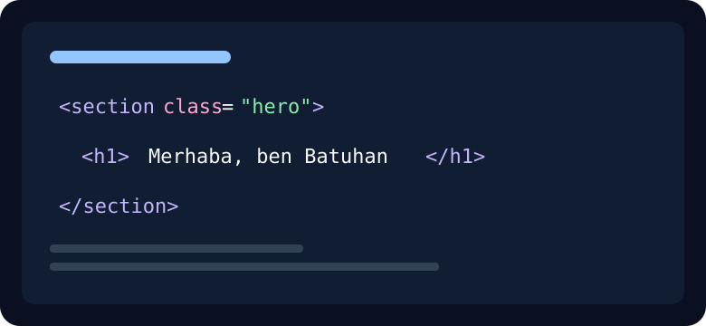

01HTML ve CSS ile sağlam bir başlangıç
Bir web sayfasının temelini HTML, görünümünü ise CSS oluşturur. Semantik HTML etiketleri içeriği anlamlı bölümlere ayırırken CSS; renk, boşluk ve tipografi gibi görsel kararları yönetir.
HTML / EXAMPLE
<main>
<section class="hero">
<h1>Merhaba dünya</h1>
<p>İlk web sayfam.</p>
</section>
</main>Başlangıçta içeriği doğru etiketlerle kurmak, erişilebilirlik ve arama motorlarının sayfayı anlaması açısından önemlidir.